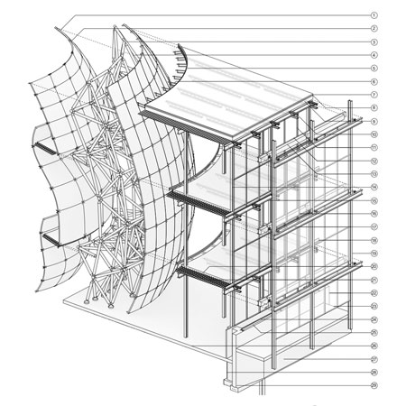
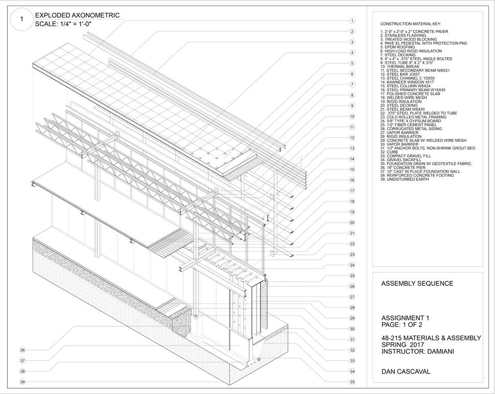
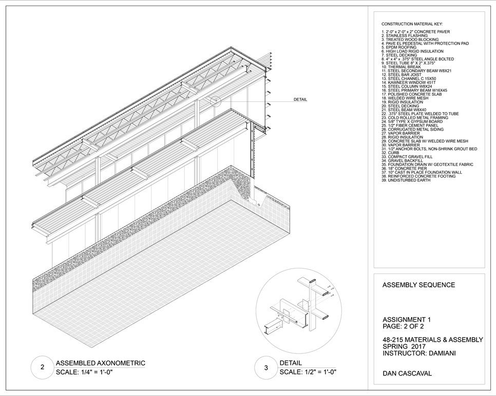
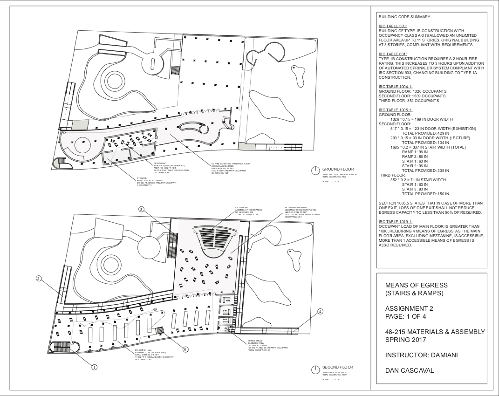
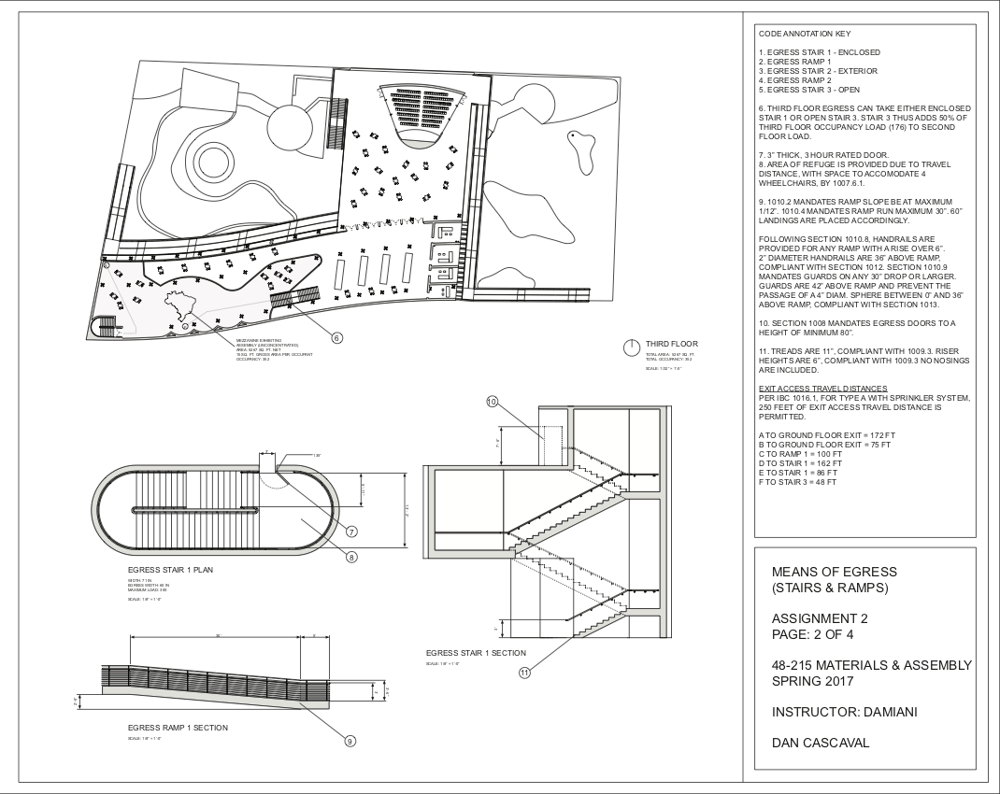
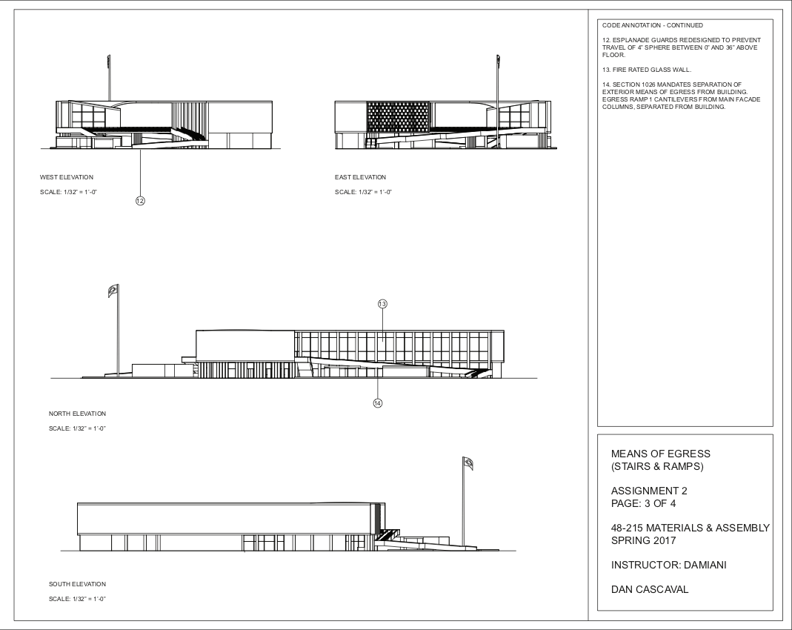
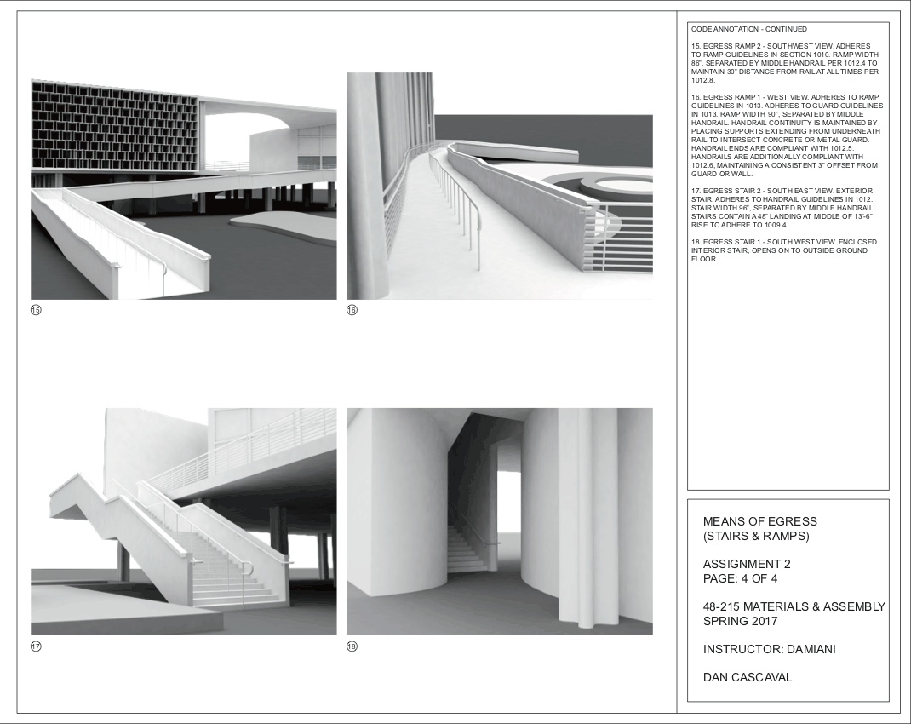
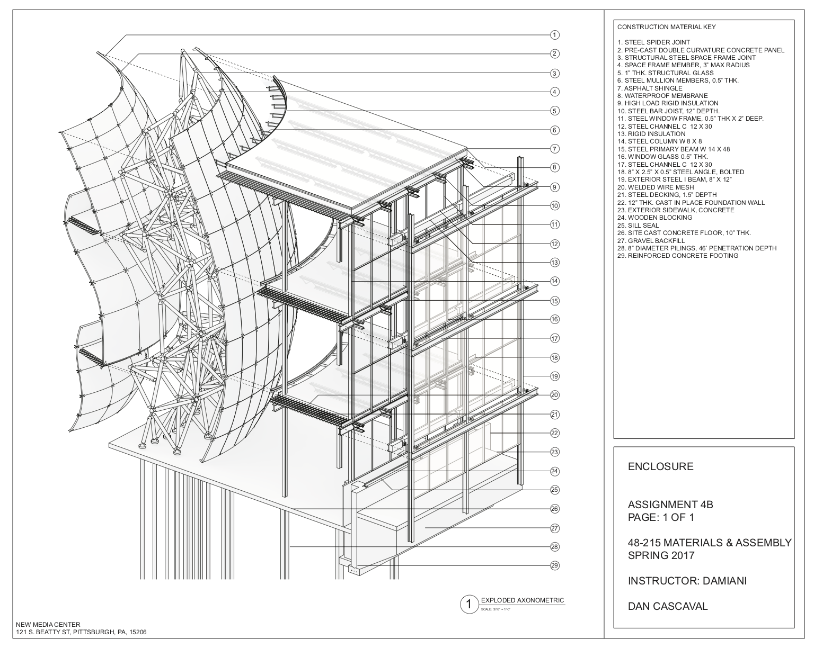
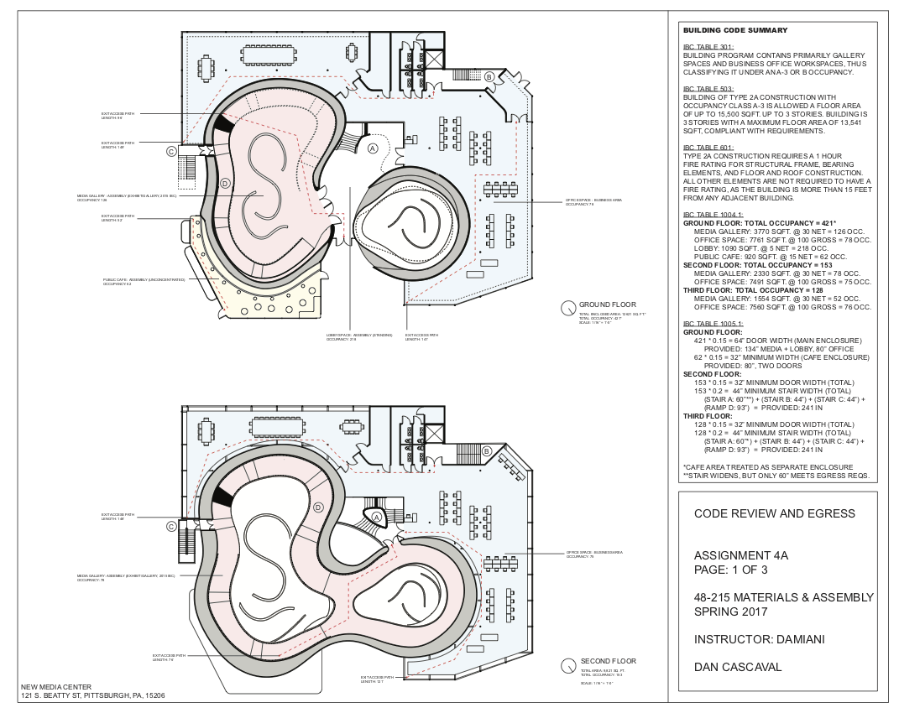
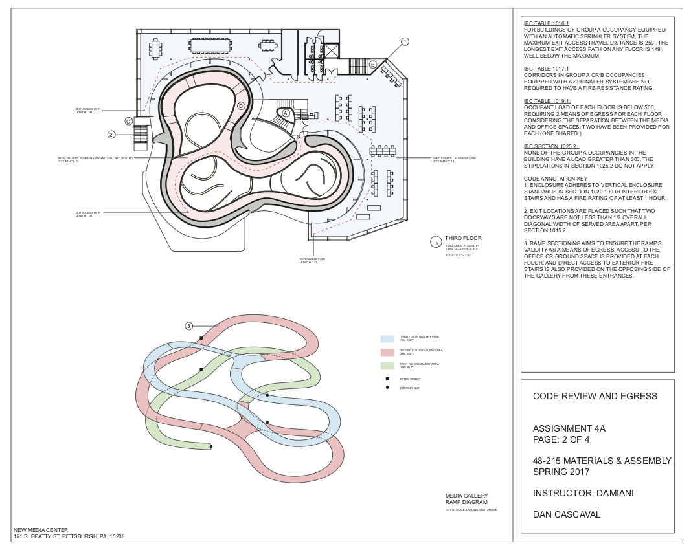

Drawings done for a project-based construction course (48-215 Materials and Assembly). Class explores the fundamentals of modern building construction, including types of construction, building codes, the use of materials and the construction process with an emphasis on technical drawing.
[-] Sequence of Assembly
This assignment involved taking information from a wall section and creating a 3D assembly drawing, researching materials and specifications, and drawing a typical assembly scenario for a bay in building of Type II-B Construction.
[-] Exploded Assembly Axonometric

[-] Assembled Axonometric and Detail

[-] Egress Analysis
For this assignment, Egress Analysis of Oscar Niemeyer's Brazilian Pavilion (New York, 1939) was conducted according to modern-day standards for egress as detailed in IBC 2015. Additional egress systems were then designed and incorporated, taking into account occupant load, construction type, and disability access while maintaining the building's architectural style.
[-] Ground and First Floor Analysis

[-] Upper Floor and Egress Details

[-] Elevational Drawings

[-] Technical Renderings

[-] Experimental Media
A further investigative study into the technical resolution of a studio design project. This included both Egress Analysis and construction detailing. The project features a dual-layered exterior facade and a interior spaceframe containing a curvilinear space, and focuses on architectural detailing to support the overall concept.
[-] Exploded Wall Section Axonometric

[-] Ground and First Floor Analysis

[-] Second Floor and Ramp Analysis

© Dan Cascaval 2017.